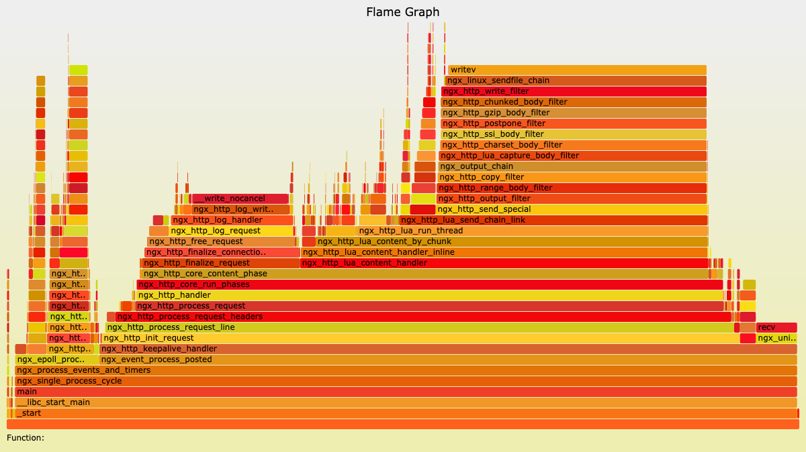

- 00 开篇词 OpenResty，为你打开高性能开发的大门.md
- 01 初探OpenResty的三大特性.md
- 02 如何写出你的“hello world”？.md
- 03 揪出隐藏在背后的那些子项目.md
- 04 如何管理第三方包？从包管理工具luarocks和opm说起.md
- 05 [视频]opm项目导读.md
- 06 OpenResty 中用到的 NGINX 知识.md
- 07 带你快速上手 Lua.md
- 08 LuaJIT分支和标准Lua有什么不同？.md
- 09 为什么 lua-resty-core 性能更高一些？.md
- 10 JIT编译器的死穴：为什么要避免使用 NYI ？.md
- 11 剖析Lua唯一的数据结构table和metatable特性.md
- 12 高手秘诀：识别Lua的独有概念和坑.md
- 13 [视频]实战：基于FFI实现的lua-resty-lrucache.md
- 14 答疑（一）：Lua 规则和 NGINX 配置文件产生冲突怎么办？.md
- 15 OpenResty 和别的开发平台有什么不同？.md
- 16 秒杀大多数开发问题的两个利器：文档和测试案例.md
- 17 为什么能成为更好的Web服务器？动态处理请求和响应是关键.md
- 18 worker间的通信法宝：最重要的数据结构之shared dict.md
- 19 OpenResty 的核心和精髓：cosocket.md
- 20 超越 Web 服务器：特权进程和定时任务.md
- 21 带你玩转时间、正则表达式等常用API.md
- 22 [视频]从一个安全漏洞说起，探寻API性能和安全的平衡.md
- 23 [视频]导读lua-resty-requests：优秀的lua-resty-_是如何编写的？.md
- 24 实战：处理四层流量，实现Memcached Server.md
- 25 答疑（二）：特权进程的权限到底是什么？.md
- 26 代码贡献者的拦路虎：test__nginx 简介.md
- 27 test__nginx 包罗万象的测试方法.md
- 28 test__nginx 还可以这样用？.md
- 29 最容易失准的性能测试？你需要压测工具界的“悍马”wrk.md
- 30 答疑（三）如何搭建测试的网络结构？.md
- 31 性能下降10倍的真凶：阻塞函数.md
- 32 让人又恨又爱的字符串操作.md
- 33 性能提升10倍的秘诀：必须用好 table.md
- 34 特别放送：OpenResty编码指南.md
- 35 [视频]实际项目中的性能优化：ingress-nginx中的几个PR解读.md
- 36 盘点OpenResty的各种调试手段.md
- 37 systemtap-toolkit和stapxx：如何用数据搞定“疑难杂症”？.md
- 38 [视频]巧用wrk和火焰图，科学定位性能瓶颈.md
- 39 高性能的关键：shared dict 缓存和 lru 缓存.md
- 40 缓存与风暴并存，谁说缓存风暴不可避免？.md
- 41 lua-resty-_ 封装，让你远离多级缓存之痛.md
- 42 如何应对突发流量：漏桶和令牌桶的概念.md
- 43 灵活实现动态限流限速，其实没有那么难.md
- 44 OpenResty 的杀手锏：动态.md
- 45 不得不提的能力外延：OpenResty常用的第三方库.md
- 46 答疑（四）：共享字典的缓存是必须的吗？.md
- 47 微服务API网关搭建三步曲（一）.md
- 48 微服务API网关搭建三步曲（二）.md
- 49 微服务API网关搭建三步曲（三）.md
- 50 答疑（五）：如何在工作中引入 OpenResty？.md
- 结束语 行百里者半九十.md
36 盘点OpenResty的各种调试手段
你好，我是温铭。
在 OpenResty 的交流群里面，经常会有开发者提出这样的疑问：OpenResty 里面怎么调试呢？据我所知，OpenResty 中有一些支持断点调试的工具，包括 VSCode 中的插件，但至今使用并不广泛。包括作者 agentzh 以及我认识的几个贡献者在内，大家都是使用最简单的 ngx.log 和 ngx.say 来做调试。
显然，这对于大部分的新手来说并不友好。难道说众多 OpenResty 的核心维护者们，在遇到疑难杂症的时候，手里就只有打印日志这个原始的方法了吗？
当然不是，在 OpenResty 的世界中，SystemTap 和火焰图，才是处理棘手问题和性能问题的标准利器。如果你在邮件列表或者 issue 里面有这方面的提问，项目的维护者肯定会让你上传火焰图，要求用图说话而不是文字描述。
接下来的两节课，我就和你聊聊调试，以及 OpenResty 专门为调试而创造的工具集。今天我们先来看下，有哪些调试程序的方法。
断点和打印日志
在我工作的很长一段时间里面，我都是依赖编辑器的高级调试功能来跟踪程序的，这个看上去也是理所当然的。对于能在测试环境中重现的问题，不管有多复杂，我都有信心可以找到问题的根源，这是因为，这个 bug 可以被不停地重复制造出来。只要通过设置断点和增加日志，问题的根源就会慢慢浮出水面，你所需要的，只是耐心罢了。
从这个角度来看，解决测试环境中稳定复现的 bug，实际上是一个体力活。我工作中解决的绝大部分 bug 都属于这一类。
不过要注意，这里有两个前提：测试环境，以及稳定复现。现实总没有那么理想，如果是线上环境才会复现的 bug，是否有调试的方法呢？
这里我推荐一个工具——Mozilla RR，你可以把它当作是一个复读机，可以把程序的行为录制下来，然后反复地重放。说白了，不管线上环境还是测试环境，只要你能够把 bug 的“罪证”录制下来，那就可以作为“呈堂证供”慢慢地分析了。
二分查找和注释
不过，对于一些大型的项目，或者涉及面比较多的系统，比如 bug 可能来自多个服务中的某一个，也可能是查询数据库的 SQL 语句有问题，在这种情况下，即使 bug 能够稳定重现，你也并不能确定 bug 出现在哪一个环节。所以，Mozilla RR 这类录制的工具就失效了。
这时候，你可能会回忆起“二分查找”这个经典的算法。我们先在代码中注释掉一半的逻辑，如果问题依旧，那么就说明 bug 出在没有被注释的代码中，这时再注释掉剩下的一半逻辑，继续上面的循环。用不了几次，问题就被缩小到一个完全可控的范围了。
这个方法虽然听着有些笨，但在很多场景下确实见效很快。当然，随着技术的进步和系统复杂性的增加，现在我们更推荐使用 OpenTracing 这样的标准，来进行分布式追踪。
OpenTracing可以在系统的各处埋点，通过 Trace ID 把多个 Span 组成的调用链和埋点数据上报到服务端，进行分析和图形化的展现。这样就可以发现很多隐藏的问题，而且历史数据都会保存下来，方便我们随时对比和查看。
另外，如果你的系统比较复杂，比如是在微服务的环境下，那么 Zipkin、Apache SkyWalking 都是不错的选择。
动态调试
上面我讲的这些调试方法，基本上已经可以解决大部分的问题了。但是，如果你遇到的是只在线上才会偶然出现的故障，那么通过增加日志、埋点的方式来追踪的话，就会耗费相当多的时间。
我就曾经遇到过这样的一个 bug。多年前，我负责的一个系统在每天凌晨 1 点钟左右时，数据库资源就会被耗尽，并导致整个系统雪崩。当时，我们白天排查代码中的计划任务，到了晚上，团队的同学们就蹲守在公司等 bug 复现，复现的时候再去查看各自子模块的运行状态。这样下来，直到第三个晚上才找到了 bug 的元凶。
我的这个经历，和 Solaris 几个系统工程师创造 Dtrace 的背景很类似。当时 Solaris 的工程师们，也是花了几天几夜的时间排查一个诡异的线上问题，最后才发现是因为一个配置写错了。但和我不同的是，Solaris 的工程师决定彻底避免这种问题，于是发明了 Dtrace，专门用于动态调试。
动态调试，也叫做活体调试。和 GDB 这种静态调试工具不同，动态调试可以调试线上的服务，而对调试的程序而言，整个调试过程是无感知、无侵入的，不用你修改代码，更不用重启。打一个比方，动态调试就像 X 光，可以在病人无感知的情况下检查身体，而不需要抽血和胃镜。
Dtrace 便是最早的动态追踪框架，受到它的影响，其他系统中也逐渐出现了类似的动态调试工具。比如，Red Hat 的工程师，就在 Linux 平台上创造了 Systemtap，也就是我接下来要讲的主角。
Systemtap
Systemtap 有自己的 DSL，也就是小语言，可以用来设置探测点。在介绍更多的内容之前，为了不仅仅停留在抽象的概念上，让我们先来安装下 Systemtap吧。这里，用系统的包管理器来安装就可以了：
sudo apt install systemtap
我们再来看下，用 Systemtap 写的 hello world 程序是什么样子的：
# cat hello-world.stp
probe begin
{
print("hello world!")
exit()
}
是不是很简单？不过，你需要使用 sudo 权限才可以运行：
sudo stap hello-world.stp
它会打印出我们想要的 hello world! 。在大部分场景下，我们都不需要自己写 stap 脚本来进行分析，因为 OpenResty 已经有了很多现成的 stap 脚本来做常规的分析，下节课我就会为你介绍这些脚本。所以，今天我们只用对 stap 脚本有一个简单的认识就行了。
操作了几下后，回到我们的概念上来。Systemtap 的工作原理，是将上述 stap 脚本转换为 C，运行系统 C 编译器来创建 kernel 模块。当模块被加载的时候，它会通过 hook 内核的方式，来激活所有的探测事件。
比如，刚刚这个示例代码中的 probe 就是一个探针。begin 会在探测的最开始运行，与之对应的是 end，所以上面的 hello world 程序也可以写成下面的这种方式：
probe begin
{
print("hello ")
exit()
}
probe end
{
print("world!")
这里，我只对 Systemtap 进行了非常粗浅的介绍。其实，Systemtap 的作者 Frank Ch. Eigler 写了一本电子书《Systemtap tutorial》，详细地介绍了Systemtap。如果你想进一步地学习和深入了解 Systemtap，那么我建议，从这本书开始入手，就是最好的学习路径。
其他动态追踪框架
当然，对于内核和性能分析工程师来说，只有 Systemtap 还是不够用的。首先， Systemtap 并没有默认进入系统内核；其次，它的工作原理决定了它的启动速度比较慢，而且有可能对系统的正常运行造成影响。
eBPF（extended BPF）则是最近几年 Linux 内核中新增的特性。相比 Systemtap，eBPF有内核直接支持、不会死机、启动速度快等优点；同时，它并没有使用 DSL，而是直接使用了 C 语言的语法，所以也大大降低了它的上手难度。
除了开源的解决方案外，Intel 出品的 VTune 也是神兵利器之一。它直观的界面操作和数据展示，可以让你不写代码也能分析出性能的瓶颈。
火焰图
最后，让我们再来回忆下前面课程中提到过的火焰图。前面我们也提到过，perf 和 Systemtap 等工具产生的数据，都可以通过火焰图的方式，来进行更加直观的展示。下面这张图就是火焰图的示例：

在火焰图中，色块的颜色和深浅都是没有意义的，只是为了对不同的色块儿做出简单的区分。火焰图其实是把每次采样的数据进行叠加，所以，真正有意义的是色块的宽度和长度。
对于 on CPU 火焰图来说，色块的宽度是函数占用的 CPU 时间百分比，色块越宽，则说明性能消耗越大。如果出现一个平顶的山峰，那它就是性能的瓶颈所在。而色块的长度，代表的是函数调用的深度，最顶端的框显示正在运行的函数，在它之下的都是这个函数的调用者。所以，在下面的函数是上面函数的父函数，山峰越高，则说明调用的函数层级越深。
为了让你更透彻掌握火焰图这个利器，在后面的视频课中，我会用一个真实的代码案例，给你演示，如何使用火焰图来找出性能的瓶颈并解决它。
最后
要知道，哪怕是动态跟踪这种无侵入的技术，也并不是完美的。它只能检测某一个单独的进程，而且一般情况下，我们只短暂开启它，以使用这段时间内的采样数据。所以，如果你需要跨越多个服务，或者是进行长时间的检测，还是需要 opentracing 这样的分布式追踪技术。
不知道你在平时的工作中，都使用到了哪些调试工具和技术呢？欢迎留言和我讨论，也欢迎你把这篇文章分享给你的朋友，我们一起学习和进步。
© 2019 - 2023 Liangliang Lee. Powered by gin and hexo-theme-book.